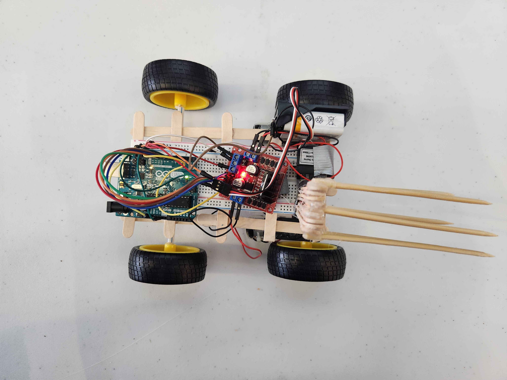
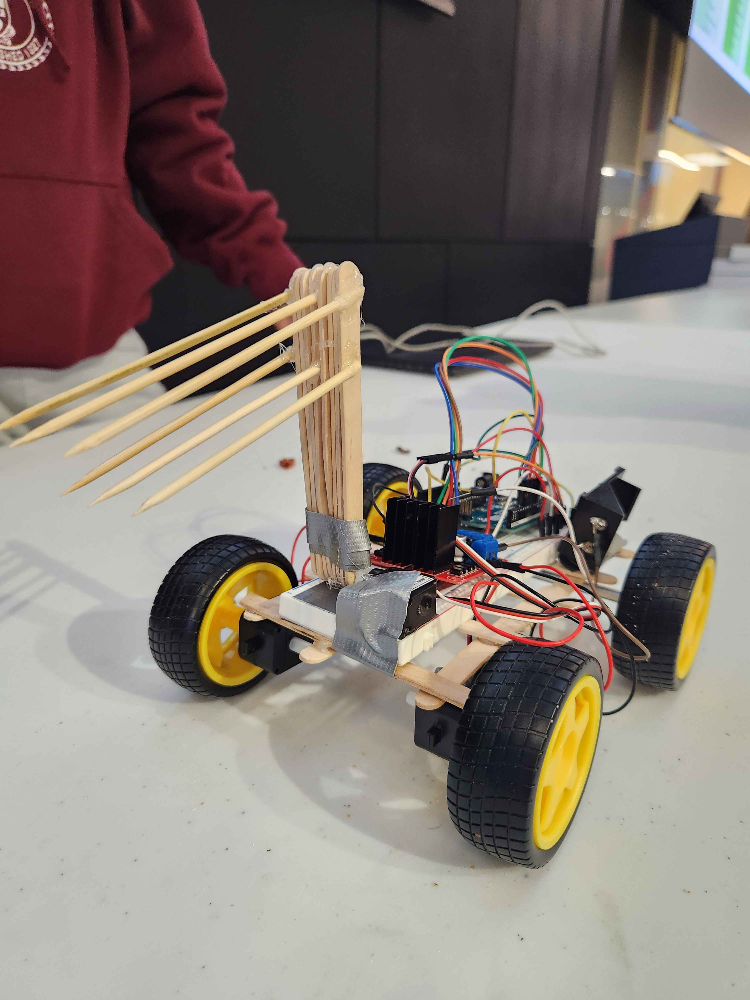
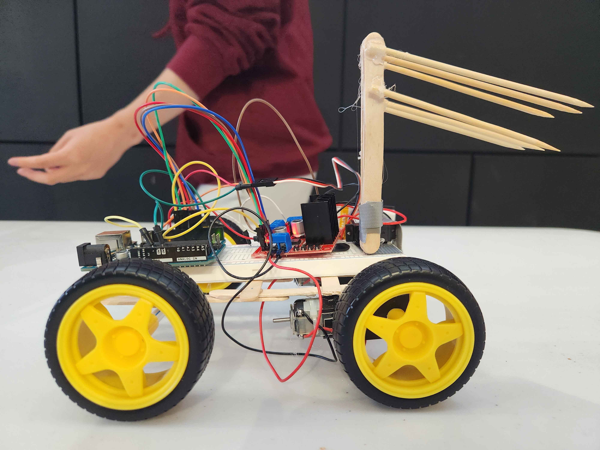

Robotic Litter Collection Vehicle
  Pick up litter without lifting a finger!
This remote-controlled litter-picking robot is designed to make cleaning up the environment effortless and efficient. Equipped with a precision spike, this robot can pick up trash with ease, helping to keep public spaces cleaner with minimal human effort. Whether it's parks, sidewalks, or other urban areas, this innovative solution brings automation to environmental care. Built for reliability and control, it's a step toward a cleaner future—one piece of litter at a time.
Arduino, C